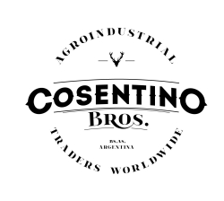

¿Quiénes somos?
Somos una empresa argentina dedicada a la comercialización de productos agrícolas con los mayores estándares de calidad. Nos caracterizan las relaciones comerciales a largo plazo, creemos que es la mejor forma de estimular la competitividad de nuestros clientes. La transparencia, responsabilidad y celeridad de nuestra atención nos destacan en un mercado tan complejo y volátil, garantizando el crecimiento y desarrollo en conjunto.
Products
-

Semillas Césped
Our grass seeds are carefully selected and processed to ensure maximum yield, disease resistance, and adaptability to different climates and soils.
-
Grass
Our grass seeds are carefully selected and processed to ensure maximum yield, disease resistance, and adaptability to different climates and soils.
-
Grass
Our grass seeds are carefully selected and processed to ensure maximum yield, disease resistance, and adaptability to different climates and soils.
-
Grass
Our grass seeds are carefully selected and processed to ensure maximum yield, disease resistance, and adaptability to different climates and soils.
Nuestra Filosofía
-
Misión
Proveer de productos agrícolas de calidad en cada una de nuestras operaciones, brindando soluciones logísticas integrales para incrementar la competitividad de nuestros clientes y satisfacerlos con profesionalismo a través de nuestros servicios de comercio exterior y seguimiento en todas las etapas del proceso.
-
Visión
Somos una empresa innovadora, que trabaja incansablemente por satisfacer la demanda de valor de nuestros clientes. Aspiramos a consolidarnos como un referente en todas las áreas de comercio exterior en las que operamos. Creemos que las relaciones humanas son el bien más importante de una sociedad, cuidarlas es nuestro mayor compromiso.
-
Valores
Trabajo honesto y profesional. Crecimiento y mejora continua en base a tres pilares: innovación, eficiencia y transparencia. Compromiso con el éxito de nuestros clientes, prestando especial atención a sus requerimientos específicos para lograr una relación comercial duradera y prolifera. El cumplimiento de la totalidad los requisitos legales vigentes. Respeto por la sociedad y el medio ambiente de cada país donde operamos.
Companies That Trust Our Work
- 
-
Location
Fake Street 123
Buenos Aires, Argentina
-
Business Hours
Lunes a viernes
10:00 hs to 18:00 hs
-
Contact
+54 9 11 22334455
mail@gmail.com